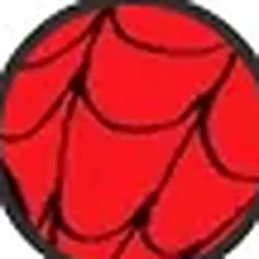

Encyclopédie › Cosmos et firmaments

Battleworld
après les Secret Wars
À vérifier1ʳᵉ apparition · Marvel Super Heroes Secret Wars #18 relations
Présentation
Le Dieu-Empereur Doom rassemble les débris du multivers en un monde-patchwork. Le multivers est restauré comme Huitième Cosmos, continuation du Septième.
Reed Richards, Franklin et Molecule Man reconstruisent ensuite le multivers.
Où le lire
- Secret Wars (Hickman & Ribić, 2015)
- Fantastic Four #1 (2018)
Fiche à vérifier : les comics de référence et la première apparition sont indiqués, mais la présentation n’a pas encore été confrontée aux comics eux-mêmes.
Relations

7ᵉ Firmament : Marvels
Cosmos et firmaments

8ᵉ Firmament : Marvels
Cosmos et firmaments
Battleworld (1984)
Lieux et dimensions · la planète du Beyonder

Doom, Dieu-Empereur
Personnages · le dieu de Battleworld

Huitième Cosmos
Cosmos et firmaments · Malkuth · 2015 – aujourd’hui

Les Beyonders
Entités abstraites · seigneurs de l’Au-delà

Molecule Man
Personnages · la bombe des Beyonders
Septième Cosmos
Cosmos et firmaments · Multivers Marvel 1961 – 2015